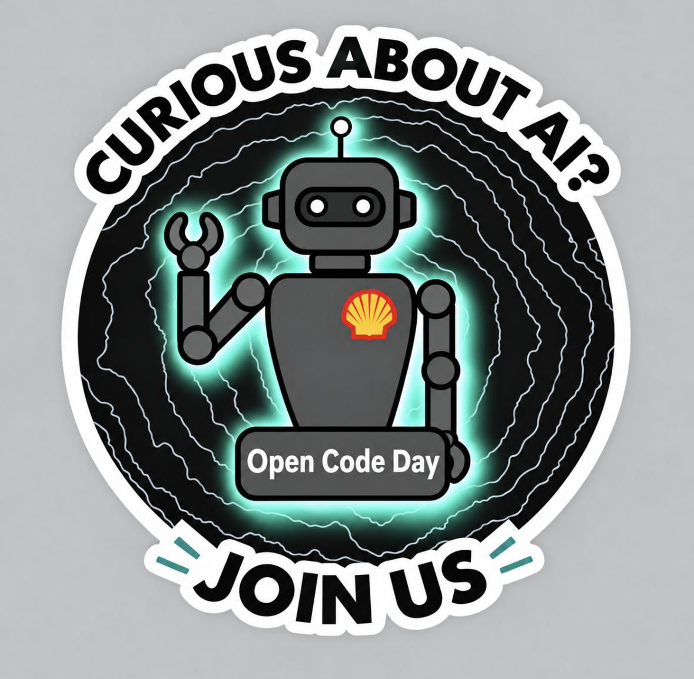

A SECOND BRAIN. A REAL LEARNING LOOP.Stay curious.
Stay curious.
Make it click.
Turn the recordings you love into knowledge you can use. Build an AI FDE roadmap around what you're learning. Find out what actually stuck.
COLLECT → CONNECT → PRACTICE → REFLECT

YOUR KNOWLEDGE, CONNECTED